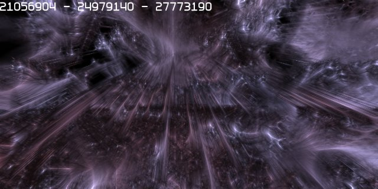
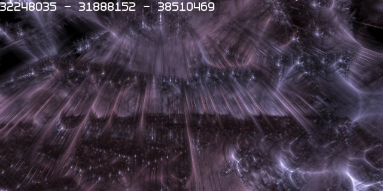
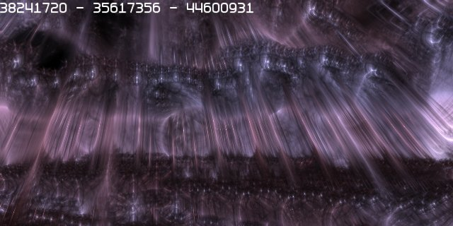
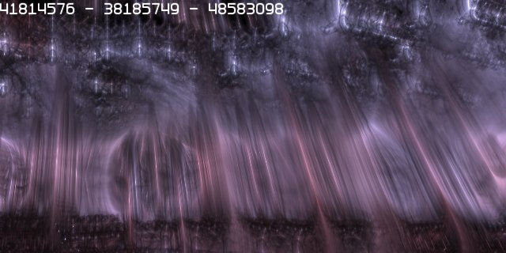

20070711 - Infinite Level of Detail
One of my favorite features of the Atom Graphics Engine is its infinite level of detail.
Because everything is procedurally solidly defined, you can literally zoom into anything and go anywhere.
There is no popup, everything is 100% seamless. Only due to player to player positioning network bandwidth,
the engine is being limited to a respectable 1000 mile cubed world which is detailed down to 1/64th of an inch (the engine uses 32bits per XYZ coordinate for positioning).
Here is a sequence showing a wide angle to telephoto zoom.



